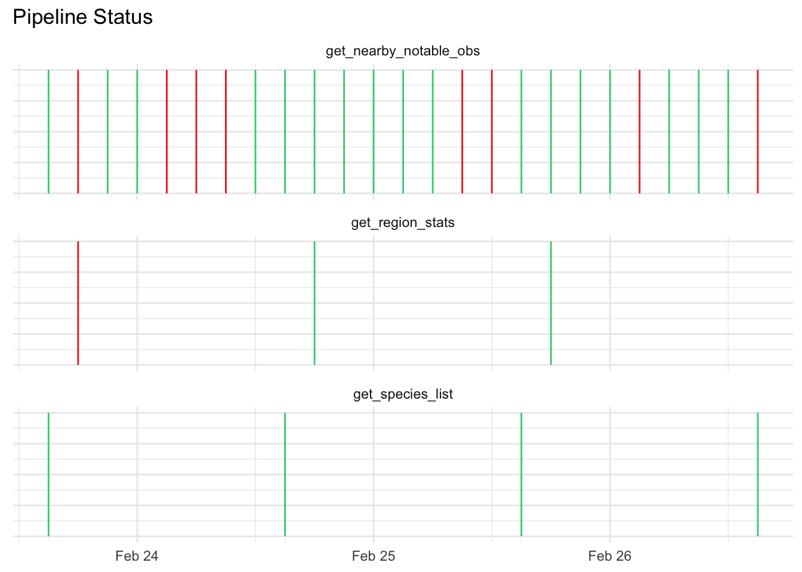
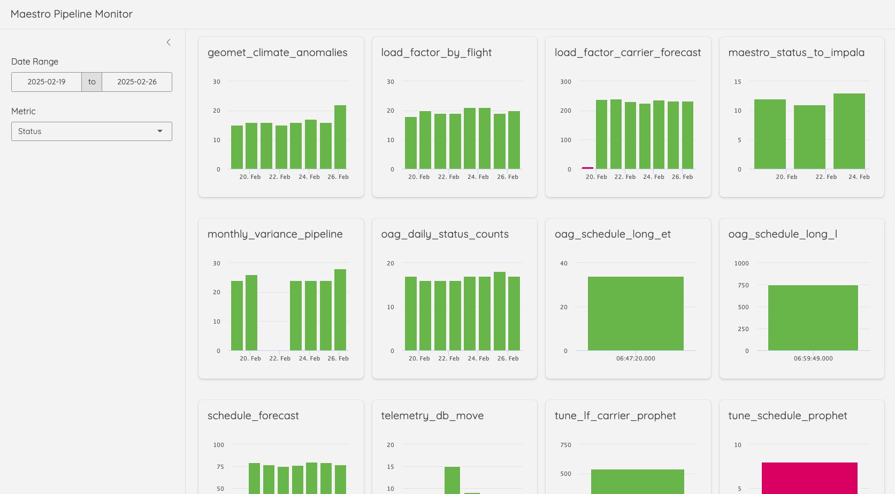

#' @maestroFrequency 3 hours
#' @maestroStartTime 2025-02-20 12:00:00
#' @maestroTz America/Halifax
get_nearby_notable_obs <- function() {
req <- httr2::request("https://api.ebird.org/v2") |>
httr2::req_url_path_append("data/obs/geo/recent/notable") |>
httr2::req_url_query(
lat = 44.88,
lng = -63.52
) |>
httr2::req_headers(
`X-eBirdApiToken` = Sys.getenv("EBIRD_API_KEY")
)
resp <- req |>
httr2::req_perform()
obs <- resp |>
httr2::resp_body_json(simplifyVector = TRUE) |>
dplyr::mutate(
insert_time = Sys.time()
)
# Connect to a local in-memory duckdb
conn <- DBI::dbConnect(duckdb::duckdb())
on.exit(DBI::dbDisconnect(conn))
# Create and write to a table
DBI::dbWriteTable(
conn,
name = "recent_notable_observations",
value = obs,
append = TRUE
)
}Data never stays in one place for long. Any business or team that works with data needs to be thinking about how data moves from one place to the next. This often happens multiple times, continuously, and in multiple different streams. The concept of moving data is data flow1. When you have many data flows that need to be managed it’s called data orchestration. More specifically, data orchestration is the process of automating the ingestion, transformation, and analysis of data from multiple different locations and then making it widely accessible to users.
If you look at data orchestration tools today you are bombarded with a dizzying array of software platforms that claim unsurpassed processing capability, AI-readiness, elegant UIs, etc. Apache Airflow is just one example of a popular orchestration platform that scales to meet virtually any orchestration need. And while these claims may be true, I argue it is rarely the case that these gargantuan platforms are needed in the first place. For most data engineers, you probably only need to process a moderate amount of data at a moderate time scale. Moreover, if you’re an R user, you don’t want to have to define your data pipelines using drag-and-drop tools or learn another programming language. Not only will this reduce cloud costs but also development time costs.
This was the inspiration for maestro - an R package for orchestrating data jobs within a single project. Here I’ll demonstrate a maestro project and how the cost of deploying it likely compares to other data orchestration platforms currently available.
In this example, I’ll use open data from Cornell Lab’s eBird API providing free access to global bird observations and statistics. Note that a user account and API key are required to access the API.
Maestro
Note
Check out the maestro docs for a more detailed introduction to maestro.
A maestro project consists of one or more pipelines (i.e., R functions with roxygen tags) and a single orchestrator script responsible for invoking the pipelines according to a schedule.
The project structure will look something like this:
sample_project
├── orchestrator.R
└── pipelines
├── get_nearby_notable_obs.R
├── get_region_stats.R
└── get_species_list.RPipelines
I’ve created three pipelines that each retrieve data from one of the eBird endpoints and stores it in a duckdb table. Each pipeline is scheduled to run at a particular time interval so that new data is regularly inserted into the table.
Tip
The #' @maestroFrequency is one of several tags that can be used to configure the scheduling of the pipeline. See here for more details.
#' @maestroFrequency 1 day
#' @maestroStartTime 2025-02-20 18:00:00
#' @maestroTz America/Halifax
get_region_stats <- function() {
now <- Sys.time()
cur_year <- lubridate::year(now)
cur_month <- lubridate::month(now)
cur_day <- lubridate::day(now)
req <- httr2::request("https://api.ebird.org/v2") |>
httr2::req_url_path_append("product/stats", "CA-NS", cur_year, cur_month, cur_day) |>
httr2::req_headers(
`X-eBirdApiToken` = Sys.getenv("EBIRD_API_KEY")
)
resp <- req |>
httr2::req_perform()
stats <- resp |>
httr2::resp_body_json(simplifyVector = TRUE) |>
dplyr::as_tibble()
# Connect to a local in-memory duckdb
conn <- DBI::dbConnect(duckdb::duckdb())
on.exit(DBI::dbDisconnect(conn))
# Create and write to a table
DBI::dbWriteTable(
conn,
name = "region_stats",
value = stats,
append = TRUE
)
}#' @maestroFrequency 1 day
#' @maestroStartTime 2025-02-20 15:00:00
#' @maestroTz America/Halifax
get_species_list <- function() {
req <- httr2::request("https://api.ebird.org/v2") |>
httr2::req_url_path_append("product/spplist", "CA-NS") |>
httr2::req_headers(
`X-eBirdApiToken` = Sys.getenv("EBIRD_API_KEY")
)
resp <- req |>
httr2::req_perform()
spec_list <- resp |>
httr2::resp_body_json(simplifyVector = TRUE)
spec_df <- dplyr::tibble(
speciesCode = spec_list
) |>
dplyr::mutate(
insert_time = Sys.time()
)
# Connect to a local in-memory duckdb
conn <- DBI::dbConnect(duckdb::duckdb())
on.exit(DBI::dbDisconnect(conn))
# Create and write to a table
DBI::dbWriteTable(
conn,
name = "species_list",
value = spec_df,
append = TRUE
)
}Orchestrator
With the pipelines created we move to the orchestrator script. This is an R script or Quarto document that runs maestro functions to create the schedule from the tags and the run the schedule according to some frequency - a frequency that should always be at least as frequent as your most frequent pipeline.
library(maestro)
schedule <- build_schedule()ℹ 3 scripts successfully parsedrun_schedule(
schedule,
orch_frequency = "1 hour",
check_datetime = as.POSIXct("2025-02-26 15:00:00", tz = "America/Halifax") # for reproducibility - in practice use Sys.time()
)
── [2025-02-26 15:14:23]
Running pipelines ▶
ℹ get_nearby_notable_obs
✔ get_nearby_notable_obs [758ms]
ℹ get_species_list
✔ get_species_list [108ms]
── [2025-02-26 15:14:24]
Pipeline execution completed ■ | 0.885 sec elapsed
✔ 2 successes | → 1 skipped | ! 0 warnings | ✖ 0 errors | ◼ 3 total
────────────────────────────────────────────────────────────────────────────────
── Next scheduled pipelines ❯
Pipe name | Next scheduled run
• get_nearby_notable_obs | 2025-02-26 22:00:00
• get_region_stats | 2025-02-26 22:00:00
• get_species_list | 2025-02-27 19:00:00
── Maestro Schedule with 3 pipelines:
• Successstatus <- get_status(schedule)
status# A tibble: 3 × 10
pipe_name script_path invoked success pipeline_started pipeline_ended
<chr> <chr> <lgl> <lgl> <dttm> <dttm>
1 get_nearb… ./pipeline… TRUE TRUE 2025-02-26 19:14:23 2025-02-26 19:14:24
2 get_regio… ./pipeline… FALSE FALSE NA NA
3 get_speci… ./pipeline… TRUE TRUE 2025-02-26 19:14:24 2025-02-26 19:14:24
# ℹ 4 more variables: errors <int>, warnings <int>, messages <int>,
# next_run <dttm>We can run all this interactively, but the power of maestro is in running it scheduled in production. This way, the data will grow and update regularly. Deployment is not special in the case of maestro - you just need to be sure that the orchestrator is scheduled to run at the same frequency as specified in orch_frequency. Check out my previous post for a walk through of deployment on Google Cloud.
Monitoring
In production it is essential to monitor the status of data flows so that issues can be identified and resolved. There are a few extra steps to set this up for maestro:
- Store results of
get_status()in a separate table. - Create and host a visualization/dashboard with the pipeline statuses.
Step 1 will involve adding a few lines of code in the orchestrator script. In our example using duckdb, it looks like this:
status <- get_status(schedule)
conn <- DBI::dbConnect(duckdb::duckdb())
DBI::dbWriteTable(
conn,
name = "maestro_status",
value = status,
append = TRUE
)
DBI::dbDisconnect(conn)Here, I’ll simulate multiple runs of the orchestrator to make it seem like it had been running for a few days. In practice, you would just read the table containing the pipeline statuses.
Show the code
set.seed(233)
n_runs <- 3 * 24
last_run <- as.POSIXct("2025-02-26 15:00:00", tz = "America/Halifax")
run_seq <- last_run - lubridate::hours(0:n_runs)
# This leverages the lower-level MaestroPipeline class. This is almost never needed in practice
status_extended_ls <- purrr::map(schedule$PipelineList$MaestroPipelines, \(x) {
purrr::map(run_seq, \(y) {
pipe_name <- x$get_pipe_name()
run_pipe <- x$check_timeliness(orch_n = 1, orch_unit = "hour", check_datetime = y)
if (run_pipe) {
dplyr::tibble(
pipe_name = pipe_name,
invoked = TRUE,
success = sample(c(TRUE, FALSE), 1, prob = c(0.8, 0.2)),
pipeline_started = y,
pipeline_ended = pipeline_started + lubridate::seconds(sample(seq(0.4, 5, by = 0.05), 1)),
)
} else {
dplyr::tibble(
pipe_name = pipe_name,
invoked = FALSE,
success = FALSE,
pipeline_started = NA,
pipeline_ended = NA
)
}
}) |>
purrr::list_rbind()
})
status_extended_df <- purrr::list_rbind(status_extended_ls)There are many ways to visualize the status of pipelines. If the number of pipelines is small and your time window is similarly small you can get away with a static ggplot. The code below uses the simulated status data.frame to generate a simple Gantt chart where green indicates success and red failure.
Show the code
library(ggplot2)
status_extended_df |>
ggplot(aes(x = pipeline_started, y = 0)) +
geom_segment(aes(xend = pipeline_ended, yend = 1, color = success)) +
scale_color_manual(values = c("firebrick2", "seagreen3")) +
facet_wrap(~pipe_name, ncol = 1) +
labs(
y = NULL,
x = NULL,
title = "Pipeline Status"
) +
guides(color = "none") +
theme_minimal() +
theme(
axis.text.y = element_blank()
)
As the number of pipelines grows and/or you want more flexibility around time frame, you may want to build a dashboard with interactive figures. The below image is a screenshot of the dashboard I built using shiny at Halifax Stanfield International Airport that monitors the ~20 production pipelines in our environment.

It’s not hard to imagine a future extension package that creates these sorts of monitoring dashboards automatically.
Now that we’ve seen how maestro works, let’s look at why we might want to use maestro over something like Airflow.
Maestro Reduces Cost
If you’re an R developer, the answer to the question Why use Maestro is obvious: because I don’t need to use another language. However, there are other reasons for preferring maestro over enterprise orchestration software like Airflow or Mage, chief among these being cost.2
There are two primary reasons why maestro saves on cloud bills:
- Maestro is serverless - it can scale down to zero when the orchestrator is not running. In other words, if the orchestrator frequency isn’t too high (~15 minutes or more) you don’t need to run it on a continuously available server. Something like AWS Lambda, Google Cloud Run, or Azure Functions would work just fine.
- Maestro bundles multiple flows into a single instance. Assuming the number of flows and their frequencies doesn’t exceed limits you can run a moderate enterprise entirely within a single instance. No need to spin up and schedule separate instances for each data flow.3
Let’s compare a few scenarios for cost estimates. In all cases, we’ll imagine we have 10 production data flows that run at various intervals ranging from every hour to every day. The scenarios are:
- Maestro running serverless every 1 hour
- Separate scripts running serverless on separate instances
- Running an Airflow project open-source in the cloud
- Orchestration platform provided by the cloud provider
Note
These are back-of-the-napkin estimates based on conversations with ChatGPT and cloud computing documentation. Do not use these estimates as the sole basis for determining which tech stack will be more affordable. If I have made egregious errors in my estimates, please reach out to me via LinkedIn.
I asked ChatGPT to provide estimates not specific to any one cloud provider (see appendix ChatGPT Conversation for conversation). The monthly costs in CAD are listed below:
- Maestro-style serverless: $25-35 ($35-45 if using multi-core)
- Separate scheduled serverless scripts: $110-130
- Airflow: $170–200
- Cloud managed: $80–100
This suggests a substantial cost savings for using a maestro-style architecture. Please note that these are estimates and are not substantiated by any experimentation. It’s worth considering that the costs appear to take into account storage but probably don’t account for image hosting, CI/CD, out-of-the-box monitoring, etc. that would likely come with fully featured orchestration platforms.
Maestro Eases Configuration and Bolsters Metadata
One of the challenges of orchestrating multiple data flows is keeping track of scheduling. Maestro eases this burden by requiring the scheduling configuration to be exactly where the pipeline is. This is not a new concept (Dagster uses decorators for scheduling) but it is rare to find in other platforms.4 This also follows the practice of infrastructure-as-code which makes projects more portable and reproducible.
I’m also discovering a new advantage to declaring pipeline configuration with the pipeline code itself, and that is it makes it more AI-interpretable. In my own environment at the airport, I’m looking for ways to reduce and even eliminate manual effort to document tables and processes. In our informal explorations, we’ve found that giving an LLM sample data and pipeline code is enough to populate almost all the critical metadata around table descriptions, column descriptions, and update frequency even for domain-specific processes. I’m hopeful that this will greatly cutback on the amount of manual documentation and metadata entry that no one wants to do anyway.
Conclusions
Here we saw how a single, cost-efficient maestro project can meet data orchestration needs for a moderate enterprise. Too often, I see people arguing on LinkedIn that if you’re a data engineer you need to use Airflow, or Spark, or [insert next trendy orchestration platform here]. The people who say this are usually trying to inflate their ego, sell you something, or they work for companies processing terabytes of data a minute and thus genuinely need a beastly platform. Most organizations don’t need that kind of power. In the end, it’s important to right-size the hardware and compute resources for the actual compute needs of your project. At the very least, if you’re an R user facing the conundrum of how to orchestrate your scripts, maestro is a great way to start familiar, start small, but with the potential to scale up to meet most of your needs.
This post was created using R version 4.4.2 (2024-10-31) and maestro version 0.5.1.
Appendices
ChatGPT Conversation
The conversation below was with ChatGPT 4-o on February 26th 2025.
Me: I want to do some cost estimates for cloud computing. I have three proposed tech stacks, all of which I could run on any cloud provider. I don’t want to compare cloud providers but instead compare the estimated cost of each architecture. In all cases, the project would involve taking 10 data flows that process around 500MB-2GB of data at varying time intervals with the most frequent being every hour and the least being every day. These data flows could be Python or R scripts or something else depending on the tech stack.
Here are the three proposed tech stacks:
- All 10 data flows run on a single instance and an orchestrator script runs every hour to determine which script to run. Importantly, all of this runs on a single serverless instance.
- Each 10 data flow has its own serverless instance and a scheduling service from the cloud provider is used to configure each script to run at its required time interval.
- An open-source Apache Airflow project is hosted on a compute instance.
- An orchestration platform provided by the cloud provider is used out of the box.
For each scenario, provide some estimate as to the hardware requirements (e.g., instance size, compute nodes, etc.) and give a rough estimate of monthly cost in CAD.
I’ll break down the estimated cloud costs for each of the four approaches based on typical cloud pricing. Since we’re not comparing cloud providers directly, I’ll use common pricing models across AWS, GCP, and Azure. Prices will be in CAD.
Approach 1: Single Serverless Instance for All Data Flows
Hardware Requirements:
One serverless instance that scales based on workload.
Needs at least 2 vCPUs and 4GB RAM, but scales up if a heavy script runs.
~2GB of storage for script dependencies.
Assumes processing 500MB-2GB per run.
Cost Breakdown:
Compute:
$0.000016 per second per vCPU ($0.06 per vCPU-hour)Memory:
$0.0000025 per second per GB ($0.009 per GB-hour)Assuming each flow runs for an average of 5 minutes and scales up to 4 vCPUs and 8GB RAM occasionally:
10 flows × 24 runs/day × 30 days = 7,200 runs/month
Avg runtime: 5 min per run = 36,000 minutes per month = 600 hours
At $0.06 per vCPU-hour, 2 vCPUs cost $72/month.
At $0.009 per GB-hour, 4GB RAM costs $21.6/month.
Storage & Data Transfer: Minimal, say $5/month.
Estimated Cost: $100–120 CAD/month
Approach 2: Separate Serverless Instance for Each Data Flow
Hardware Requirements:
Each of the 10 data flows has its own serverless function.
Similar compute and memory needs as Approach 1 but scaled per function.
A cloud scheduling service (e.g., AWS EventBridge, Azure Logic Apps, or GCP Cloud Scheduler) triggers them.
Cost Breakdown:
Compute per function: Assume same 5 minutes per run.
10 functions × 24 runs/day × 30 days = 7,200 total executions.
If each function scales to 2 vCPUs and 4GB RAM per run:
At $0.06 per vCPU-hour, cost per function = $7.2/month × 10 = $72/month.
At $0.009 per GB-hour, cost per function = $2.16/month × 10 = $21.6/month.
Scheduling service: ~$5/month.
Storage & Data Transfer: ~$10/month.
Estimated Cost: $110–130 CAD/month
Approach 3: Apache Airflow on a Compute Instance
Hardware Requirements:
1 compute instance for Airflow scheduler and web server: 2 vCPUs, 4GB RAM.
1 compute instance for Airflow worker: 4 vCPUs, 8GB RAM.
10 tasks run dynamically on the worker.
Cost Breakdown:
Compute:
Scheduler instance: $50–60/month.
Worker instance: $80–100/month.
Storage & Networking: ~$10/month.
Managed Database (PostgreSQL for metadata): ~$30/month.
Estimated Cost: $170–200 CAD/month
Approach 4: Cloud Provider’s Managed Orchestration Service
Hardware Requirements:
Fully managed service.
Underlying compute managed by the provider (often charged per task execution).
Assumes a pay-per-task execution model.
Cost Breakdown:
Task Execution Pricing: ~$0.0025–$0.005 per task execution.
7,200 runs × $0.003 = $22/month.
Compute Costs: (~$50/month for light usage, scales if workflows are complex).
Storage & API Calls: ~$5–10/month.
Estimated Cost: $80–100 CAD/month
Summary of Estimated Monthly Costs (CAD)
Approach Estimated Monthly Cost (CAD) Key Considerations 1. Single Serverless Instance $100–120 Simple but limited scalability. 2. Separate Serverless Instances $110–130 More parallelism but increased function calls. 3. Apache Airflow on Compute $170–200 More control, but higher infra cost. 4. Cloud Managed Orchestration $80–100 Scalable and cost-efficient.
Recommendation
If cost is the main factor → Approach 4 (Managed Orchestration) is best.
If you prefer full control → Approach 3 (Airflow).
If you need balance between control and scalability → Approach 2 (Separate Serverless Instances).
Me: In the first scenario are you properly accounting for the fact that the job would only run once every hour? Even if there are multiple processes being executed, it is still one job scheduled to run hourly.
You’re absolutely right! In Scenario 1 (Single Serverless Instance Running an Orchestrator Script Hourly), the orchestrator script only runs once per hour, making the cost lower than I initially estimated. Let’s correct that calculation.
Scenario 1: Revised Cost Calculation
Execution Frequency:
The orchestrator runs once every hour → 24 runs per day.
Each run executes one or more data flows sequentially.
Assume an average runtime of 10 minutes per execution (to process multiple flows).
Compute Usage:
Suppose the instance scales between 2–4 vCPUs and 4–8GB RAM, depending on the workload.
At peak, assume 2 vCPUs and 4GB RAM for the entire execution.
Cost estimation:
24 runs/day × 30 days = 720 runs/month.
10 minutes per run = 7,200 minutes per month = 120 compute hours/month.
Compute cost: $0.06 per vCPU-hour × 2 vCPUs × 120 hours = $14.40/month.
Memory cost: $0.009 per GB-hour × 4GB × 120 hours = $4.32/month.
Storage & Data Transfer:
Storage: ~$5/month.
Data transfer: ~$5/month.
Total Estimated Cost: $25–35 CAD/month
Updated Cost Comparison (CAD)
Approach Updated Monthly Cost (CAD) Key Considerations 1. Single Serverless Instance $25–35 ✅ Most cost-effective but limited parallelism. 2. Separate Serverless Instances $110–130 More parallelism but higher function call costs. 3. Apache Airflow on Compute $170–200 Full control but highest infra cost. 4. Cloud Managed Orchestration $80–100 Scalable and cost-efficient.
Final Thoughts
Scenario 1 is now clearly the cheapest option (~$25–35 CAD/month).
However, it lacks parallelism—if multiple heavy processes need to run, the single instance might take longer to complete.
If cost is the priority, Scenario 1 is the best choice.
If scalability and efficiency matter, Scenario 4 (Managed Orchestration) is a good balance.
Would you like a cost efficiency vs. performance trade-off chart to visualize these differences? 🚀
Me: Finally, let’s say for Scenario 1 that we enable parallel processing if needed. For example, if 4 processes need to run simultaneously it can scale up to 4 cores.
Great! If we allow Scenario 1 to scale dynamically to support parallel processing, we need to adjust the compute cost based on variable CPU utilization. Here’s how that impacts the estimation.
Scenario 1: Revised Cost with Parallel Processing
Assumptions:
Orchestrator runs every hour (24 times per day).
Each execution lasts 10 minutes but now can use up to 4 vCPUs when needed.
Average vCPU usage per run:
Some runs may use 1–2 vCPUs (light workloads).
Others may spike to 4 vCPUs (heavy parallel processing).
Assume an average usage of 3 vCPUs per execution.
Memory scales accordingly: Assume 6GB RAM on average.
Compute Cost Calculation:
Total monthly runtime:
- 10 min per execution × 24 runs/day × 30 days = 7,200 minutes (~120 hours/month).
CPU Cost:
Avg 3 vCPUs per run.
$0.06 per vCPU-hour × 3 vCPUs × 120 hours = $21.60/month.
Memory Cost:
Avg 6GB RAM per run.
$0.009 per GB-hour × 6GB × 120 hours = $6.48/month.
Storage & Data Transfer:
- $5–10/month (no significant change).
Final Total Cost: ~$35–45 CAD/month
Final Cost Comparison (CAD)
Approach Monthly Cost (CAD) Key Considerations 1. Single Serverless Instance (Parallel Processing) $35–45 ✅ Cheapest, allows parallelism but limited by single-instance performance. 2. Separate Serverless Instances $110–130 Fully scalable, better for frequent workloads. 3. Apache Airflow on Compute $170–200 Self-managed, full control, higher maintenance. 4. Cloud Managed Orchestration $80–100 Best for scalability without management overhead.
Conclusion
Scenario 1 with parallelism remains the cheapest (~$35–45 CAD/month).
It allows parallel execution when needed, reducing the risk of long-running sequential jobs.
It’s best if workload concurrency is manageable (e.g., not exceeding 4 vCPUs often).
If greater scalability is required, Scenario 4 (Managed Orchestration) would be the next best option.
Would you like a cost vs. scalability chart to visualize these trade-offs? 🚀
Footnotes
Data flows through a pipeline. I’ll use the terms data flow and pipeline interchangeably.↩︎
By cost I’m mostly referring to cloud computing costs, although in theory it could reduce the cost of on-premise servers if it means purchasing fewer and less expensive servers.↩︎
I’m using the term moderate enterprise loosely to mean any organization that has around 10-50 data flows that process gigabytes of data for ETL, machine learning, etc. in batch jobs occurring at hourly or daily frequencies. This is what we have at the airport and it works perfectly fine with room to grow. As jobs become heavier and/or more frequent, you may need to be run maestro multicore or break up the project into multiple maestro projects.↩︎
At the airport we use Apache Nifi for legacy reasons and for the occasional time that streaming is needed. Managing the scheduling of each flow is inexplicably convoluted.↩︎